Lập trình C/C++ với Dev-C++¶
The only way to learn a new programming language is by writing programs in it. - Dennis Ritchie
Đặc điểm của Dev-C++ ¶
- Dev-C++ thường được sử dụng trong dạy/học lập trình C/C++ bởi: rất gọn nhẹ, dễ sử dụng, đủ tính năng cơ bản, mã nguồn mở (open-source).
- Dev-C++ hỗ trợ một số trình biên dịch khác nhau (như MinGW, Cygwin, TDM-GCC).
- Dev-C++ chỉ chạy trên Windows.
Cài đặt Dev-C++ ¶
Tải nguồn cài đặt Dev-C++¶
Tải nguồn cài tại SourceForge. Gói cài đặt này gồm cả trình biên dịch TDM-GCC.
Cài đặt Dev-C++¶
-
Mở file đã tải xuống (phiên bản mới nhất có tên file cài đặt là
"Dev-Cpp 5.11 TDM-GCC 4.9.2 Setup.exe") để bắt đầu cài đặt. -
License Agreement: chọn I Agree.
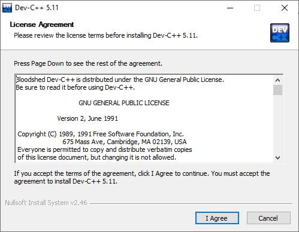
-
Choose Components: nên chọn mặc định (Full) để cài đầy đủ các thành phần. Nếu đã từng cài Dev-C++ trước đó, nên chọn thêm
Remove old configuration filesđể gỡ bỏ các thiết lập cũ.
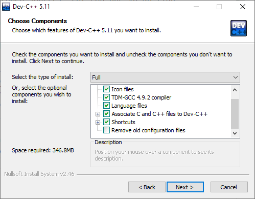
Chọn Next.
-
Choose Install Location: chọn vị trí cài đặt trên ổ đĩa. Nhấn Install.
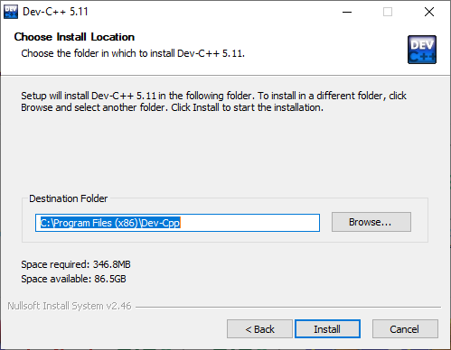
-
Hoàn tất cài đặt
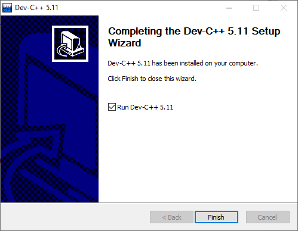
Nhấn Finish.
Sử dụng Dev-C++ ¶
Viết chương trình in ra màn hình dòng chữ "Hello World!". - Khởi động Dev-C++
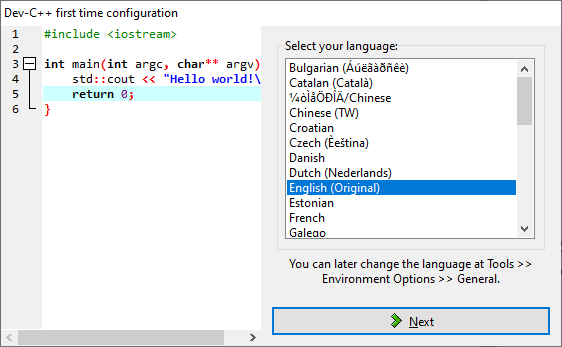
Khi chạy lần đầu, Dev-C++ yêu cầu chọn lựa về ngôn ngữ, theme (các thiết lập về font chữ, màu sắc và các biểu tượng). Chọn thiết lập mặc định và nhấn OK để hoàn tất.
Bước 1: Viết chương trình (Edit)¶
- Tạo file mã nguồn
Chọn File->New->Source File, hoặc nhấn tổ hợp phím Ctrl+N, hoặc chọn biểu tượng New ở thanh công cụ chính.
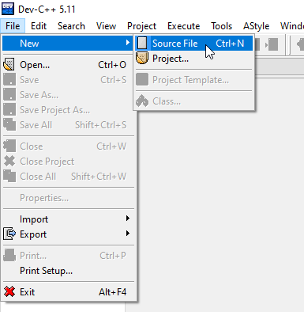
Ở màn hình soạn thảo, tiến hành viết mã lệnh chương trình.
// The first C program: print "Hello World" message
#include <stdio.h>
int main()
{
printf("Hello World!");
return 0;
}
- Lưu file mã nguồn
Chọn File->Save, hoặc nhấn Ctrl+S để lưu lại file mã nguồn. Nên đặt tên file ngắn gọn và mô tả được nội dung, chẳng hạn helloworld.c.
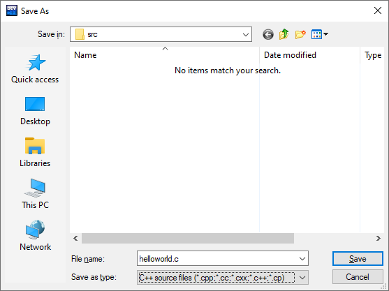
Bước 2: Biên dịch (Compile)¶
Chọn Excecute->Compile, hoặc nhấn F9, hoặc nhấn biểu tượng Compile trên thanh công cụ.
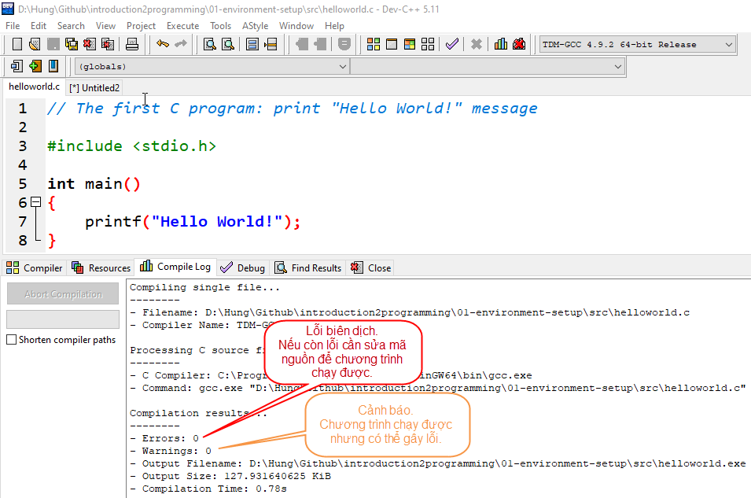
Cửa sổ Compile Log hiện kết quả biên dịch.
Nếu chương trình không có lỗi nào (errors = 0), trình biên dịch (compiler) sẽ dịch file mã nguồn helloworld.c và liên kết với các thư viện có dùng đến trong chương trình để tạo thành file thực thi được trên máy tính, ở đây là file helloworld.exe.
Lỗi (errors)
Là các thông báo của trình biên dịch khi chương trình còn lỗi (loại "lỗi tầm thường"). Cần phải quay lại Bước 1 để sửa hết các lỗi này.
Ví dụ về một số lỗi thường gặp ở người mới học lập trình:
- Thiếu ký tự
;phân tách các câu lệnh:
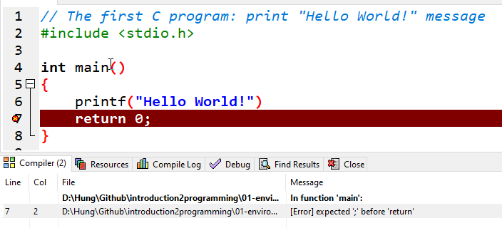
- Nhập chưa đúng tên hàm, từ khóa, chuỗi định dạng, cú pháp lệnh, v.v..:
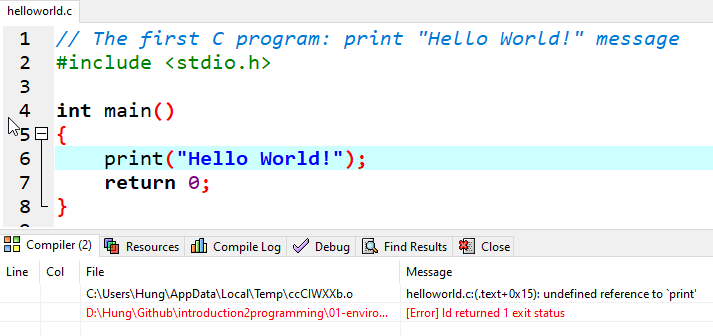
Cảnh báo (warnings):
Là các thông báo của trình biên dịch, cảnh báo chương trình vẫn chạy được nhưng có thể gây ra lỗi.
Ví dụ:
Trong trường hợp sau, cảnh báo ở dòng 5 do mã nguồn thiếu khai báo thư viện vào ra chuẩn stdio.h:
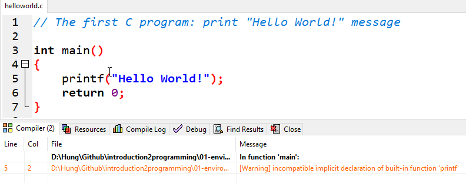
Bước 3: Chạy chương trình (Run)¶
Chọn Execute->Run, hoặc nhấn F10, hoặc nhấn biểu tượng Run trên thanh công cụ.
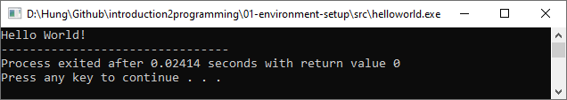